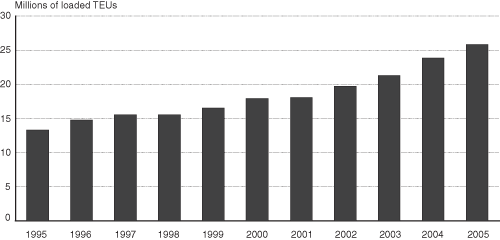

Excel | CSV | Table Version
NOTE: TEUS = twenty-foot equivalent units. One twenty-foot container equals one TEU while one forty-foot container equals two TEUs. Total includes ports for all container ports in all 50 states and Puerto Rico.The data in this figure include only loaded containers in U.S. international maritime activity. It includes U.S. imports, exports, plus transshipments.
SOURCE: U.S. Department of Transportation, Research and Innovative Technology Administration, Bureau of Transportation Statistics, based on data from U.S. Department of Transportation, Maritime Administration which are drawn from the Journal of Commerce, Port Import/Export Reporting Service (PIERS) data system, and available at www.marad.dot.gov, as of November 2006.